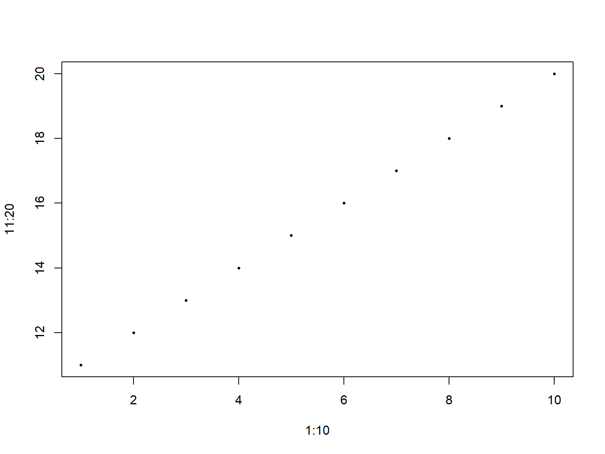
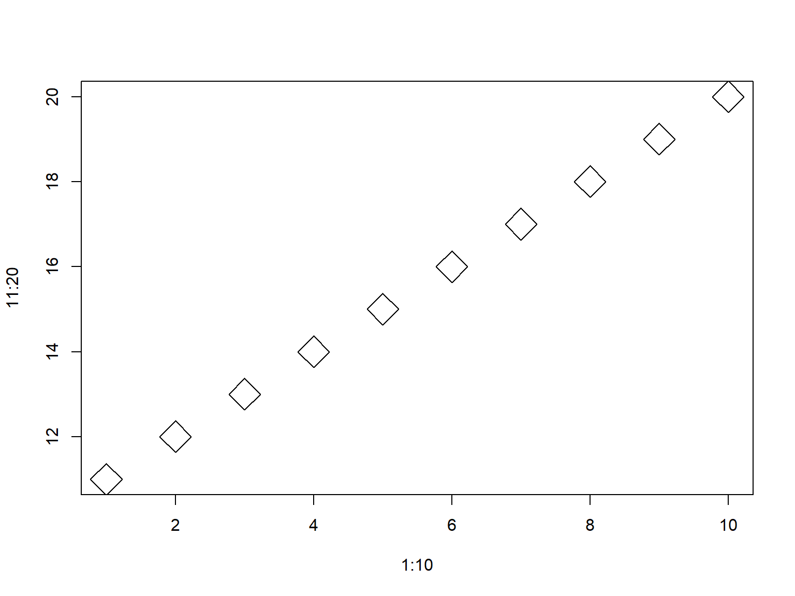
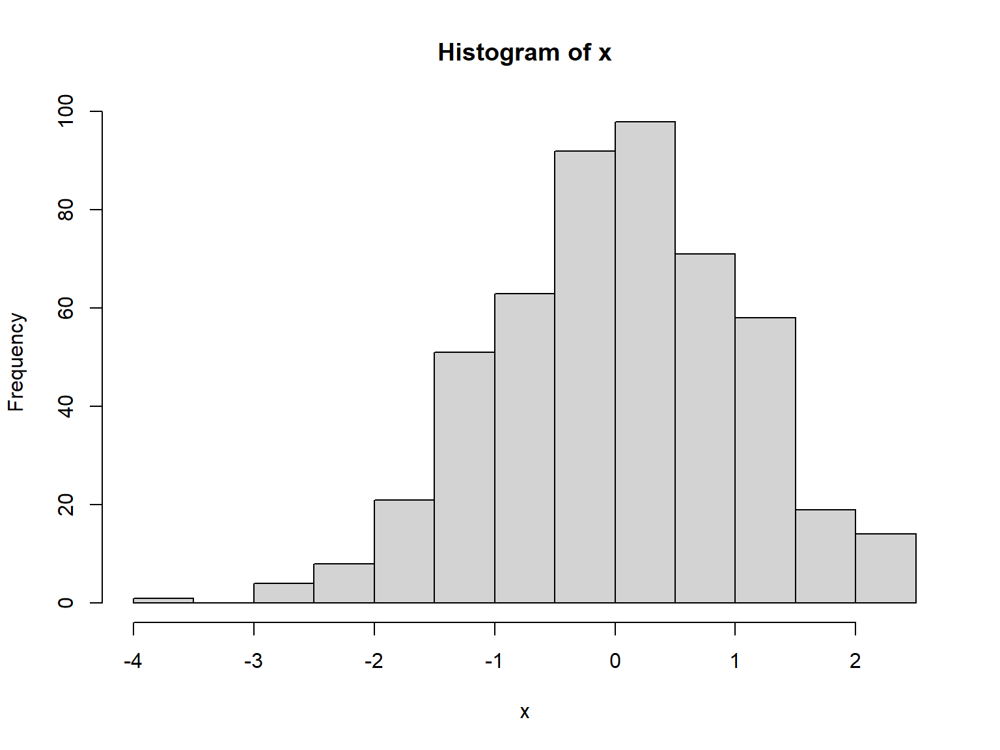

Spatial Data Analysis with R
BayGeo, Spring 2021
R Syntax

R as a Fancy Calculator
2 + 2 # add numbers
3 ^ 4 # powers
sqrt( 49 ) # functions
Run the commands above in the RStudio console.
How many decimals does R display by default?
White space is generally ignored in R (but helpful for readability).
Everything in R is case sensitive.
The # character tells R that what comes after is a comment.
Variables
A key technique in all programming languages is to store values in the form of variables.
In R, you can use the ‘=’ or ‘<-’ operators to do this.
## These are equivalent:
y <- 3^3
y = 3^3
RStudio keyboard shortcut to insert ‘<-’: alt + -
The term ‘variable’ and ‘object’ are generally synonymous.
Note when you assign a value to a variable, R doesn’t print the result to the console. To see the value of a variable, simply type it by itself.
Pretty much anything can be saved to a variable. Here we save some text and dates.
## [1] "vanilla"
start_date <- Sys.Date()
start_date
## [1] "2021-03-16"
Create two variables and add them together.
What happens if you add a number variable to a character variable?
Updating Variables
You can give a new value to a variable at any time.
You can use ‘current’ value as part of the expression for the ‘new’ value.
x <- 2
# x is now 2
x <- x + 3
# x is now 5
Fix this code:
r <- 10
circle_diameter <- R * 2
circle_area >- pi * r ^ 2
[Solution]
r <- 10
circle_diameter <- r * 2
circle_area <- pi * r ^ 2
Naming Variables
The rules for naming variables are pretty flexible. You can use numbers, letters, and most special characters.
Rules to take note of:
- Can’t start with a number (e.g., 3pieces)
- Hyphens and spaces are not allowed
- Don’t use the name of a function (like ‘c’) or a reserved keyword (like pi)
Naming Styles
There are a handful of popular naming styles. Pick one that you like, and be consistent!
|
Style
|
Example
|
|
alllowercase
|
adjustcolor
|
|
period.separated
|
shoe.size
|
|
underscore_separated (aka snake case)
|
numeric_version
|
|
lowerCamelCase
|
addTaskCallback
|
|
UpperCamelCase
|
SignatureMethod
|
Data Types
All variables have a class or data type, which you can view using class().
num_plots <- 10
class(num_plots)
## [1] "numeric"
Other common data types:
- character
- factor
- date
- data frame
- matrix
- list
Vectors
Most variables are vectors, in other words they can store multiple values. For basic data types, like numbers and characters, these are called vectors.
When we enter x <- 1, we are actually creating a numeric vector of length 1.
## [1] 24
rep() is a function that repeats a value, returning a vector:
## [1] "ball" "ball" "ball" "ball" "ball"
rnorm() is a function that can generate multiple random numbers:
## [1] -0.6751092 1.0157629 -1.2752944 -0.2254509 -0.0340021
c() stands for combine. It returns a vector containing the arguments passed (which all have to be the same type).
yn <- c(TRUE, FALSE, TRUE)
yn
## [1] TRUE FALSE TRUE
LETTERS is an example of a built-in constant. It contains a vector of length 26 containing characters:
## [1] "A" "B" "C" "D" "E" "F" "G" "H" "I" "J" "K" "L" "M" "N" "O" "P" "Q" "R" "S" "T" "U" "V" "W" "X" "Y" "Z"
The [1] and [18] in the output tells you the index of the element displayed after it.
## [1] 26
Filtering
To extract a single element from a vector, use square bracket notation. Inside the square brackets, put the index of the element you want.
## [1] "B"
To return multiple elements, pass multiple indices.
## [1] "B" "C" "D"
## [1] "B" "C" "D"
You can also use square brackets to extract elements in a different order.
## [1] "D" "C" "B"
1. Write an expression that returns the last 5 letters of the alphabet.
[Solution]
## [1] "V" "W" "X" "Y" "Z"
2. Write an expression that returns only the vowels.
[Solution]
## [1] "A" "E" "I" "O" "U"
Tabular Data
R has two data types for two-dimensional data: data frames and matrices.
Both of these store data in rows and columns.
The columns of a data frame can have names and contain different data types.
## View a sample data frame
head(iris)
## Sepal.Length Sepal.Width Petal.Length Petal.Width Species
## 1 5.1 3.5 1.4 0.2 setosa
## 2 4.9 3.0 1.4 0.2 setosa
## 3 4.7 3.2 1.3 0.2 setosa
## 4 4.6 3.1 1.5 0.2 setosa
## 5 5.0 3.6 1.4 0.2 setosa
## 6 5.4 3.9 1.7 0.4 setosa
The columns of a matrix must all be the same data type.
## Create a matrix
matrix(1:25, ncol=5)
## [,1] [,2] [,3] [,4] [,5]
## [1,] 1 6 11 16 21
## [2,] 2 7 12 17 22
## [3,] 3 8 13 18 23
## [4,] 4 9 14 19 24
## [5,] 5 10 15 20 25
We’ll learn more about working with data frames in an upcoming session.
Base R Plotting Functions
While there are many plotting packages, plotting functions in Base R include:
plot()
plot(…, add=TRUE) overlays more data on the last plot
hist()
barplot()
boxplot()
‘Base R’ refers to the functions available when you first install R (as opposed to functions in additional packages you install later.)
Plot and graph are generally used interchangably.
Generate these plots. What do the pch and cex arguments do?
plot(x=1:10, y=11:20, pch=16, cex=1)
[Solution]
plot(x=1:10, y=11:20, pch=16, cex=0.5)

plot(x=1:10, y=11:20, pch=5, cex=3)

pch controls the symbol shape (plot character), and cex controls the symbol size (character extension factor).
## Generate 500 random numbers normally distributed
## Compute the average of those numbers
## Create a histogram of the distribution
[Solution]
## Generate 500 random numbers normally distributed
x <- rnorm(500)
length(x)
## [1] 500
## Compute the average of those numbers
mean(x)
## [1] 0.02721143
## Create a histogram of the distribution
hist(x)

Top Five Arguments for Plotting Spatial Data
|
Argument
|
Effect on Plot
|
|
asp = 1
|
aspect ratio
|
|
col=“red”
|
fill color
|
|
border=“blue”
|
outline color
|
|
pch=16
|
point symbol (16 = round dot)
|
|
axes = TRUE
|
draw axes
|
Working with Functions
Many functions take arguments. Arguments can be required or optional.
See the function’s help page to determine which arguments are expected.

If you pass arguments to a function in the order expected and don’t skip any, you don’t have to name them:
rnorm(500, 50, 3) ## generate 500 normally distributed random
## numbers with a mean of 50 and stand dev = 3.
If you don’t pass arguments in expected order (or skip some), you have to name them in the parentheses:
rnorm(n=100, sd=0.3) ## generate 100 normally distributed random
## numbers with stand deviation = 0.3
## Generate a sequence of exactly 8 numbers from 5 to 15
[Solution]
## Generate a sequence of 8 numbers from 5 to 15
seq(from=5, to=15, length.out=8)
## [1] 5.000000 6.428571 7.857143 9.285714 10.714286 12.142857 13.571429 15.000000
Future topics:
- filtering and subsetting data frames
- working with lists
- working with text
- more data types
- piping syntax